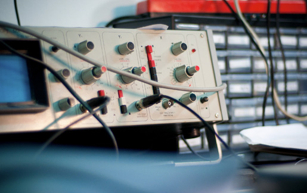

ICAIS 实验室由国家特聘专家、IEEE 院士、王中风教授牵头创建于2016年夏季。至2020年底，实验室累计获得总额超过3000万元的科研资助。
实验室成员共发表了上百篇高质量的国际期刊和会议论文，近两年连续四次荣获IEEE行业旗舰会议最佳论文奖，
有多篇论文自发表后长时间位列IEEE电路与系统领域主流期刊每月流行榜单。
ICAIS 实验室与国内外众多知名大学、研究机构以及一些国际型大企业保持密切联系并有深入合作，
能为高年级本科生和研究生提供非常优越的学习平台以及良好的出国深造机会。
在最近两年（2019-2020）的应届硕士毕业生中，人均获国家奖学金的次数大于0.8，平均起薪近40万元。
自2020年秋季开始，本实验室教师团队拥有5位毕业于全美排名前50高校的海归博士，学生团队有近70名的研究生和博士后。 近几年实验室不仅在传统研究领域：数字通信系统，特别是纠错码的设计与高速实现方面继续保持国际领先， 在深度学习的硬件加速方面也取得了一系列国际先进的成果。随着杜博士的加盟， 本实验室在VLSI for Deep Learning这一热门领域的团队优势在国际上已经是非常显著。同时本实验室也将在高速模拟电路（ADC,DAC）， 高速互联电路，高灵敏度传感器，后量子加密与区块链技术等领域全面发力。 本实验室本着教书育人，开拓创新的理念，希望为国家多多培养高质量的人才，同时为相关科学做出突出贡献。 本实验室欢迎数字通信，图像或其它信号处理，人工智能算法与实现，射频，模拟或数字集成电路等专业的学生和青年学者加盟。 有意者请联系 包老师：baoxue@nju.edu.cn。
自2020年秋季开始，本实验室教师团队拥有5位毕业于全美排名前50高校的海归博士，学生团队有近70名的研究生和博士后。 近几年实验室不仅在传统研究领域：数字通信系统，特别是纠错码的设计与高速实现方面继续保持国际领先， 在深度学习的硬件加速方面也取得了一系列国际先进的成果。随着杜博士的加盟， 本实验室在VLSI for Deep Learning这一热门领域的团队优势在国际上已经是非常显著。同时本实验室也将在高速模拟电路（ADC,DAC）， 高速互联电路，高灵敏度传感器，后量子加密与区块链技术等领域全面发力。 本实验室本着教书育人，开拓创新的理念，希望为国家多多培养高质量的人才，同时为相关科学做出突出贡献。 本实验室欢迎数字通信，图像或其它信号处理，人工智能算法与实现，射频，模拟或数字集成电路等专业的学生和青年学者加盟。 有意者请联系 包老师：baoxue@nju.edu.cn。
 王中风博士是国家特聘专家，2015年因在FEC设计与VLSI实现方面的突出贡献被评为IEEE Fellow，现任南京大学电子科学与工程学院特聘教授、博导。王中风博士早年凭自学考入清华大学，本科获准提前毕业，相继在自动化系获得学士和硕士学位。2000年他从美国明尼苏达大学电子与计算机工程系毕业，获得博士学位。他先后任职于美国国家半导体公司（National Semiconductor），俄勒冈州立大学（Oregon State University）电子与计算机学院，以及美国博通公司（Broadcom Corp.），曾经担任博通公司技术副总监，是博通公司FEC(前向纠错编码)领域的几个主要专家之一。他同时担任过美国科罗拉多大学，中国科学技术大学，上海交通大学以及南京大学的兼职教授。他是超大规模集成电路设计领域里的国际知名专家，在国际会议和期刊上发表约250篇学术论文，拥有数十项美国专利和发明，并编著专辑“VLSI”一部。王博士多次获得IEEE行业旗舰会议的最佳论文奖，2007年荣获IEEE VLSI Systems会刊年度最佳论文奖。在现有统计记录中，他是全球首位在IEEE VLSI Systems会刊上有五篇论文位列年度下载次数前20名的作者。
王中风博士是国家特聘专家，2015年因在FEC设计与VLSI实现方面的突出贡献被评为IEEE Fellow，现任南京大学电子科学与工程学院特聘教授、博导。王中风博士早年凭自学考入清华大学，本科获准提前毕业，相继在自动化系获得学士和硕士学位。2000年他从美国明尼苏达大学电子与计算机工程系毕业，获得博士学位。他先后任职于美国国家半导体公司（National Semiconductor），俄勒冈州立大学（Oregon State University）电子与计算机学院，以及美国博通公司（Broadcom Corp.），曾经担任博通公司技术副总监，是博通公司FEC(前向纠错编码)领域的几个主要专家之一。他同时担任过美国科罗拉多大学，中国科学技术大学，上海交通大学以及南京大学的兼职教授。他是超大规模集成电路设计领域里的国际知名专家，在国际会议和期刊上发表约250篇学术论文，拥有数十项美国专利和发明，并编著专辑“VLSI”一部。王博士多次获得IEEE行业旗舰会议的最佳论文奖，2007年荣获IEEE VLSI Systems会刊年度最佳论文奖。在现有统计记录中，他是全球首位在IEEE VLSI Systems会刊上有五篇论文位列年度下载次数前20名的作者。